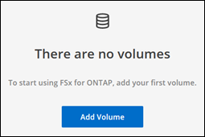
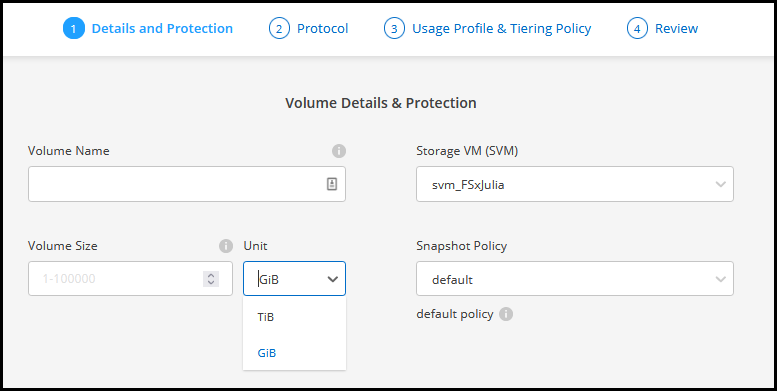
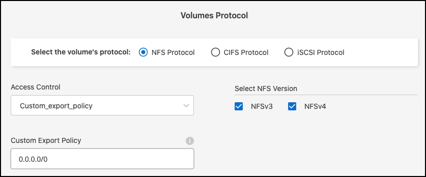
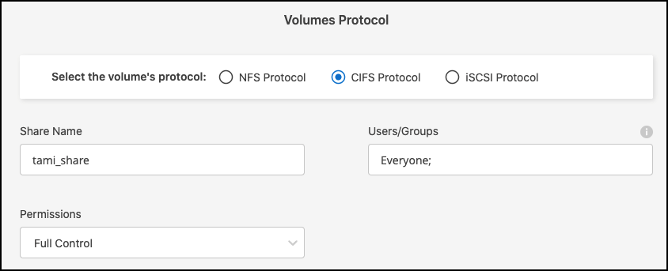
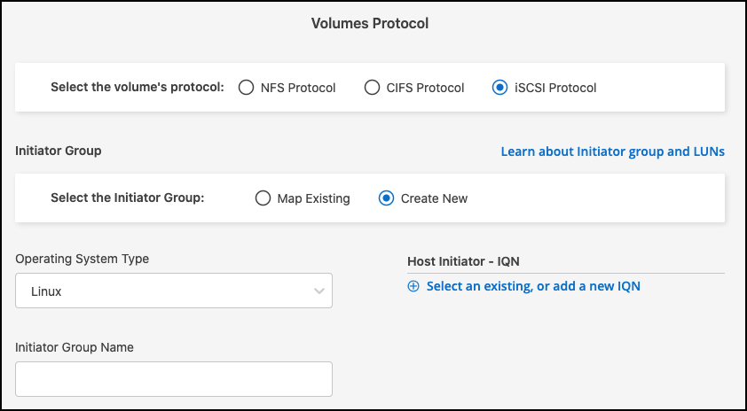
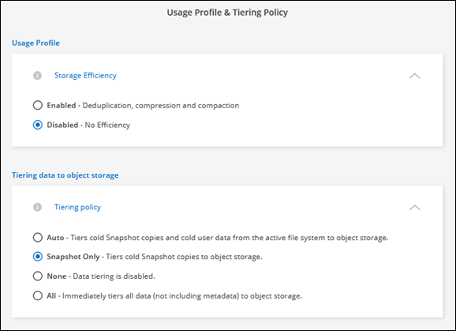
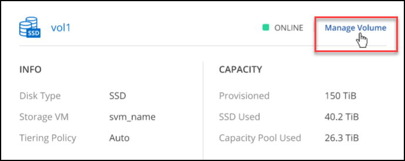

Dokumentationsänderungen beantragen
Dokumentationsänderungen beantragen In GitHub bearbeiten
In GitHub bearbeiten Leitfaden für Beitragende
Leitfaden für BeitragendeErstellung von Volumes für Amazon FSX für ONTAP
Beitragende
Nach der Einrichtung der Arbeitsumgebung können Sie FSX für ONTAP Volumes erstellen und einbinden.
Volumes erstellen
Sie können NFS-, CIFS- und iSCSI-Volumes über Ihre FSX für ONTAP Arbeitsumgebung in BlueXP erstellen und managen. Volumes, die mit der ONTAP CLI erstellt wurden, werden auch in Ihrer FSX für ONTAP Arbeitsumgebung sichtbar sein.
Sie benötigen:
-
Eine aktive "Anschluss in AWS".
-
Wenn Sie SMB verwenden möchten, müssen Sie DNS und Active Directory eingerichtet haben. Weitere Informationen zur DNS- und Active Directory-Netzwerkkonfiguration finden Sie unter "AWS: Voraussetzungen für die Nutzung eines selbst gemanagten Microsoft AD".
-
Öffnen Sie die FSX für die ONTAP-Arbeitsumgebung.
-
Wenn Sie keinen Konnektor aktiviert haben, werden Sie aufgefordert, einen hinzuzufügen.

-
Klicken Sie auf die Registerkarte Volumes
-
Klicken Sie Auf Volumen Hinzufügen.

-
Volume Details und Schutz:
-
Geben Sie einen Namen für Ihr neues Volume ein.
-
Die Felder Storage VM (SVM) füllt die SVM automatisch auf der Grundlage des Namens Ihrer Arbeitsumgebung.
-
Geben Sie die Volume-Größe ein, und wählen Sie eine Einheit (gib oder tib) aus. Die Volume-Größe wächst mit der Nutzung.
-
Wählen Sie eine Snapshot-Richtlinie aus. Standardmäßig wird stündlich ein Snapshot erstellt (wobei die letzten sechs Kopien behalten), täglich (wobei die letzten beiden Kopien aufbewahrt werden) und jede Woche (wobei die letzten beiden Kopien aufbewahrt werden).
-
Klicken Sie Auf Weiter.

-
-
Protokoll: Wählen Sie ein NFS-, CIFS- oder iSCSI-Volume-Protokoll.
-
Für NFS:
-
Wählen Sie eine Zugriffssteuerungsrichtlinie aus.
-
Wählen Sie die NFS-Versionen aus.
-
Wählen Sie eine benutzerdefinierte Exportrichtlinie aus. Klicken Sie auf das Informationssymbol, um gültige Wertkriterien anzuzeigen.

-
-
Für CIFS:
-
Geben Sie einen Freigabenamen ein.
-
Geben Sie Benutzer oder Gruppen ein, die durch ein Semikolon getrennt sind.
-
Wählen Sie die Berechtigungsstufe für das Volume aus.


Wenn dies das erste CIFS-Volume für diese Arbeitsumgebung ist, werden Sie aufgefordert, die CIFS-Konnektivität mit einem Active Directory oder Workgroup-Setup zu konfigurieren. -
Wenn Sie ein Active Directory-Setup auswählen, müssen Sie die folgenden Konfigurationsinformationen angeben.
Feld Beschreibung Primäre DNS-IP-Adresse
Die IP-Adressen der DNS-Server, die eine Namensauflösung für den CIFS-Server liefern. Der aufgeführte DNS-Server muss die Datensätze für den Servicesort (SRV) enthalten, die für die Suche nach den Active Directory-LDAP-Servern und Domänencontrollern für die Domäne erforderlich sind, der der CIFS-Server Beitritt.
Active Directory-Domäne, der Sie beitreten möchten
Der FQDN der Active Directory (AD)-Domäne, der der CIFS-Server beitreten soll.
Anmeldeinformationen, die zur Aufnahme in die Domäne autorisiert sind
Der Name und das Kennwort eines Windows-Kontos mit ausreichenden Berechtigungen zum Hinzufügen von Computern zur angegebenen Organisationseinheit (OU) innerhalb der AD-Domäne.
CIFS-Server-BIOS-Name
Ein CIFS-Servername, der in der AD-Domain eindeutig ist.
Organisationseinheit
Die Organisationseinheit innerhalb der AD-Domain, die dem CIFS-Server zugeordnet werden soll. Der Standardwert lautet CN=Computers.
DNS-Domäne
Die DNS-Domäne für die Storage Virtual Machine (SVM). In den meisten Fällen entspricht die Domäne der AD-Domäne.
NTP-Server
Wählen Sie NTP Server Configuration aktivieren, um einen NTP-Server mit Active Directory-DNS zu konfigurieren. Wenn Sie einen NTP-Server mit einer anderen Adresse konfigurieren müssen, sollten Sie die API verwenden. Siehe "BlueXP Automation Dokumentation" Entsprechende Details.
-
Wenn Sie ein Workgroup-Setup auswählen, geben Sie den Server- und Workgroup-Namen für eine Arbeitsgruppe ein, die für CIFS konfiguriert ist.
-
-
Für iSCSI: Sie können Ihre LUN über eine vorhandene Initiatorgruppe oder durch Erstellen einer neuen Initiatorgruppe verbinden. Wählen Sie zum Zuordnen einer vorhandenen Initiatorgruppe Ihr Betriebssystem und eine oder mehrere Initiatorgruppen aus.
So erstellen Sie eine neue Initiatorgruppe:
-
Wählen Sie Neu erstellen.
-
Wählen Sie Ihr Betriebssystem aus.
-
Klicken Sie hier, um einen oder mehrere qualifizierte iSCSI-Namen (IQN) des Hosts hinzuzufügen. Sie können vorhandene IQNs auswählen oder neue IQNs hinzufügen. Weitere Informationen zum Auffinden des IQN für ein Volume finden Sie unter "Verbinden Sie einen Host mit einer LUN".
-
Geben Sie einen Namen der Initiatorgruppe ein.

-
-
Klicken Sie Auf Weiter.
-
-
Nutzungsprofil und Tiering:
-
Standardmäßig ist Storage Efficiency deaktiviert. Sie können diese Einstellung ändern, um die Deduplizierung und Komprimierung zu aktivieren.
-
Standardmäßig ist Tiering Policy auf nur Snapshot eingestellt. Sie können je nach Ihren Anforderungen eine andere Tiering-Richtlinie auswählen.
-
Klicken Sie Auf Weiter.

-
-
Review: Überprüfen Sie Ihre Volumenkonfiguration. Klicken Sie auf Zurück, um die Einstellungen zu ändern, oder klicken Sie auf Hinzufügen, um das Volume zu erstellen.
Das neue Volumen wird der Arbeitsumgebung hinzugefügt.
Volumes mounten
Greifen Sie in BlueXP auf die Montageanweisungen zu, damit Sie das Volume auf einen Host mounten können.
-
Öffnen Sie die Arbeitsumgebung.
-
Wählen Sie die Registerkarte Lautstärke und Lautstärke verwalten, um das Menü Volume Actions zu öffnen.

-
Wählen Sie Mount-Befehl und befolgen Sie die Anweisungen zum Montieren des Volumens.
Das Volume ist jetzt auf den Host eingebunden.